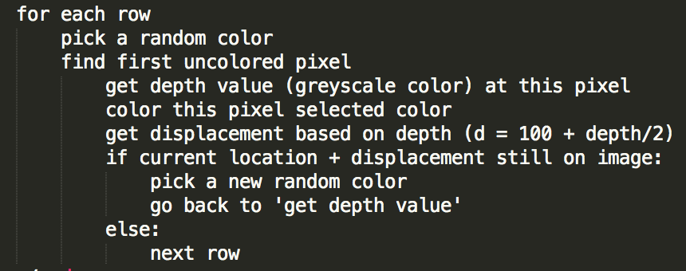
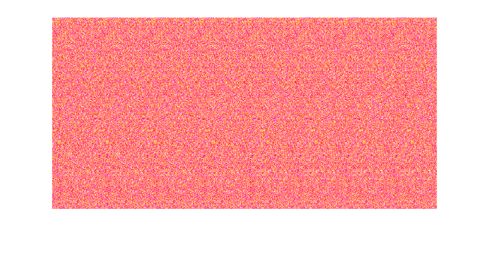
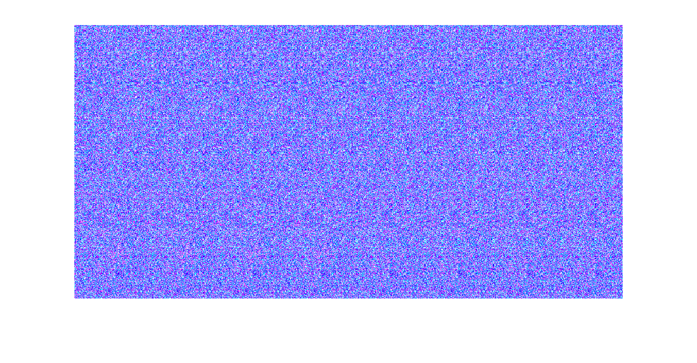
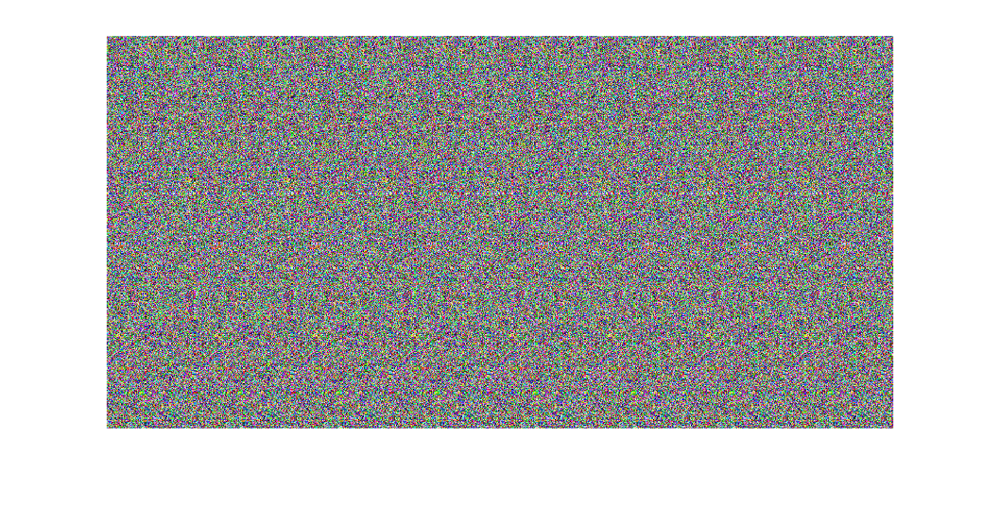
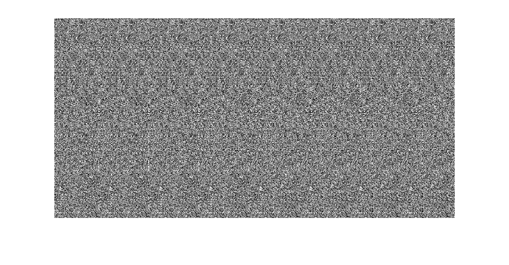
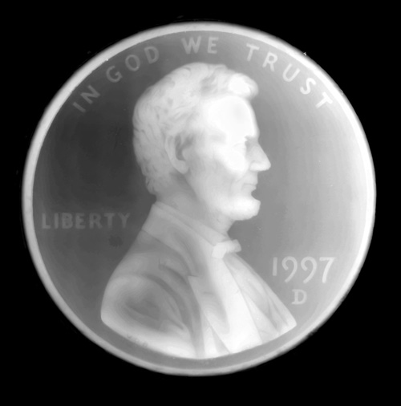
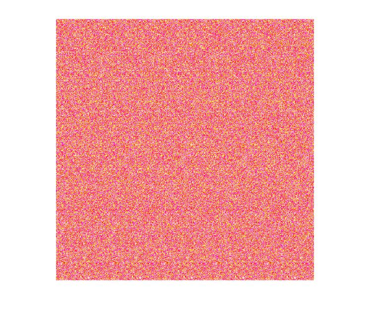
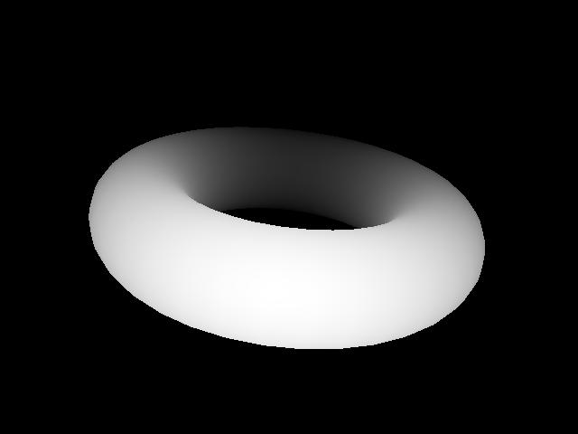
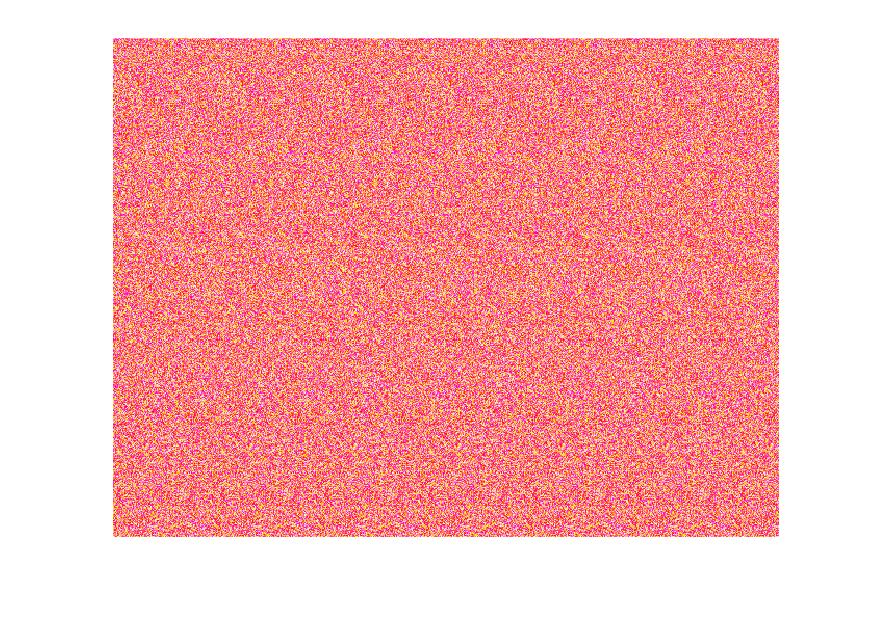

Autostereogram Generator Project
Overview
The goal of this project was to generate autostereograms from depth maps. An autostereogram creates a 3D-looking picture in a 2D image when viewed correctly. One popular technique for viewing stereograms is to start with the image close to your face and focus your eyes on looking past the image, so it appears blurry. Then slowly move the image further away, keeping your eyes focused past it, and the 3D picture should be visible.
Algorithm
Example 1: Shark
Depth Map

Autostereogram 1
The following uses colors generated with random G and B elements, but a static full R element.
Autostereogram 2
The following uses colors generated with random R and G elements, but a static full B element.
Autostereogram 3
The following uses colors generated with random R, G, and B elements.
Autostereogram 4
The following uses colors generated with random equal R, G, and B elements (greyscale).
Example 2: Penny
Depth Map
Autostereogram
The following uses colors generated with random G and B elements, but a static full R element.
Example 3: Ring
Depth Map
Autostereogram
The following uses colors generated with random G and B elements, but a static full R element.
